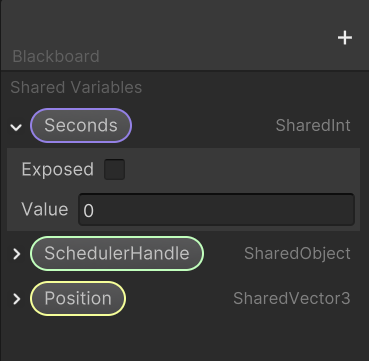
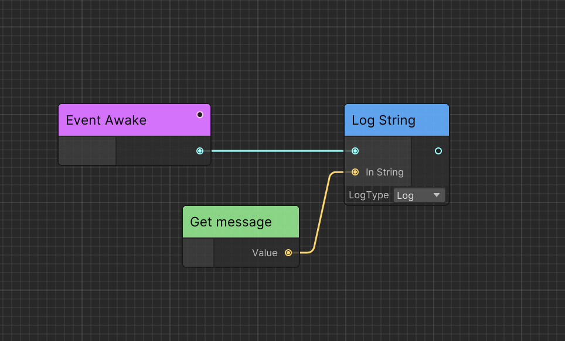

Concept of Ceres
Introducing the core concepts of Ceres.
Node
CeresNode is the logic and data container.
Port
CeresPort enables you to get data from other nodes.
Ceres use CeresPort<T> to set get generic data from other Node and use NodePort to get a NodeReference which can convert to CeresNode at runtime.
Graph
CeresGraph contains everything and acts as a virtual machine.
Data
Ceres serialize node, port and graph to an additional data structure: CeresNodeData, CeresPortData and CeresGraphData which contains the actual serialized data and metadata.
Variable
SharedVariable is a data container that can be shared between nodes and graphs.
Compared with CeresPort, SharedVariable can be edited out of graph and not contain any connection data since it not need to know where the data comes from.

Execution Path
Node can be executed in two way:
Forward: Graph can execute nodes one by one.
Dependency: Graph should execute node's dependencies before execute node.

As shown in the figure, to execute Log String, we need first get the variable message. However, since Get message has no outer connect it, it has not been executed before. So the graph need consider Get message as dependency and execute it before executing Log String.